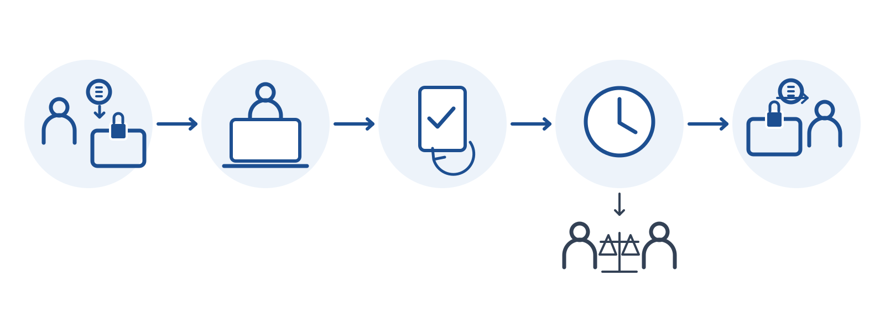

Payment protection · Upwork
Upwork Payment Protection: what it covers and what it does not

- Fund Client commits money into the locked milestone
- Work Freelancer delivers against the agreed scope
- Submit / request changes Delivery and revision loop
- Review window Client approves or requests changes in time
- Release Funds move to the freelancer
Dispute branch: If the review window does not resolve the work, either side may open the platform’s dispute / arbitration path. Exact windows and outcomes depend on the platform and contract type — see the article body.
Fixed-Price Protection (escrow milestones)
- The client funds each milestone in escrow before work begins.
- After the freelancer submits a milestone, the client has 14 days to approve or request changes. If the client approves, or the 14-day window passes, funds are released.
- Minimum fixed-price project: $5.
- Freelancer takeaway: do not start until the milestone shows as funded.
Hourly Protection
For clients: you can dispute billed hours within five days after the billing period ends, from the contract’s Timesheet tab. Upwork reviews the work diary and says it resolves the case within seven days.
For freelancers: Upwork lists requirements for Hourly Payment Protection, including:
- An active hourly contract and a client with a verified billing method.
- Completed ID verification and an account in good standing.
- Time logged with the Upwork desktop app (manual time is not covered).
- Work diary segments with memos, adequate activity, and hours within the weekly limit.
Upwork’s billing rhythm: clients are invoiced each Monday for the prior week, have until Friday to review, and funds release to the freelancer the following Wednesday (Upwork Resources article). Minimum hourly rate: $3.
What is not covered
- Manual payments such as bonuses or one-time payments, and advance recurring payments not based on hours.
- Manual time, idle time, time over the weekly limit, or non-work activity on hourly contracts.
- Clients without verified billing methods, Terms of Service violations, fraud, or misuse of the program.
- Any relationship taken off Upwork. Upwork says it offers no support, payment protection or dispute resolution once you move outside. See off-platform payment rules.
Practical checklist
- Clients: split fixed-price work into milestones you can actually evaluate in 14 days.
- Clients: review timesheets weekly; the dispute window is short.
- Freelancers: use the desktop tracker, write memos, stay under the weekly cap.
- Both: keep scope, change requests and approvals inside Upwork messages.
Background on how escrow works in general: escrow and milestone payments. Fee side: Upwork fees explained. If a payment is contested: Upwork disputes and arbitration, step by step.
FAQ
How long does a client have to review an Upwork fixed-price milestone?
14 days after submission. If the client neither approves nor requests changes in that window, funds release to the freelancer, per Upwork Help (checked Nov 5, 2026).
Does Upwork Hourly Protection cover manual time?
No. Upwork states Hourly Payment Protection applies only to time tracked with the Upwork desktop app, not manual entries.
Can clients dispute hours on Upwork?
Yes, within five days after the billing period ends, through the contract's Timesheet tab.
Sources
- Upwork Help — How hourly and fixed-price contracts are different: support.upwork.com/hc/en-us/articles/211063418-Hourly-vs-Fix (checked Nov 5, 2026)
- Upwork Help — Dispute an agency or freelancer's hours: support.upwork.com/hc/en-us/articles/17976540792467--Dispute (checked Nov 5, 2026)
- Upwork Help — Decide between hourly and fixed-price contract: support.upwork.com/hc/en-us/articles/17931377993107--Decide- (checked Nov 5, 2026)
- Upwork Resources — Understanding freelancer payment protection: www.upwork.com/resources/understanding-freelancer-payment-pr (checked Nov 5, 2026)
- Upwork Help — Why you shouldn't get paid outside Upwork: support.upwork.com/hc/en-us/articles/360048105134-Why-you-sh (checked Nov 5, 2026)
No affiliate links on this page. Figures change; re-check the official page before you rely on them.